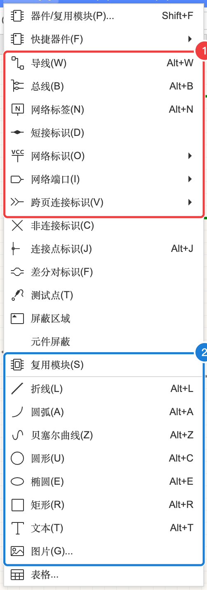
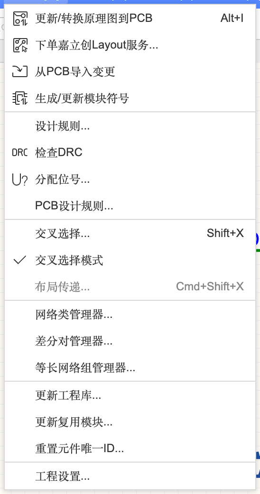
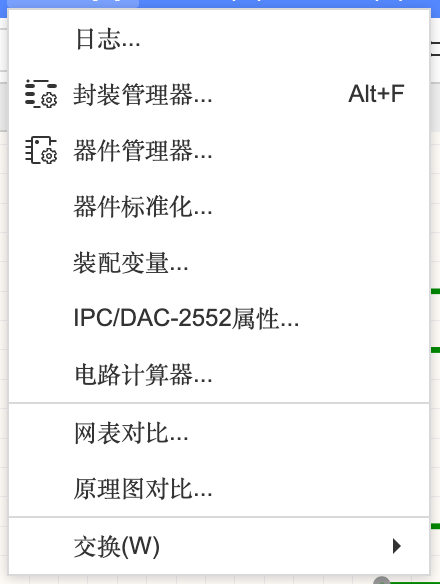

4.0 本章导览与菜单地图
Quickstart 里你已经能画出一张能用的原理图了。这一章把原理图编辑器的功能系统地过一遍：图页管理、放器件的各种方法、8 种连接方式的区别、编辑技巧、多页与层次设计、检查、和 PCB 联动、工具和输出。按需查阅，不用从头读到尾。
这一章讲什么#
Quickstart 的两个案例只用到了原理图编辑器大约三分之一的功能。这里按“你什么时候会用到”来分组，每个子页都可以单独看：
4.1 图纸、图页与放置器件图纸模板和标题栏；新建/管理多张图页；从元件库、常用库、快捷器件放元件；器件管理器和器件标准化
4.2 连接关系（重点）导线、总线、网络标签、网络标识、网络端口、跨页连接标识、短接标识、非连接标识、连接点、差分对标识——各自是什么、作用范围多大、什么时候用
4.3 编辑技巧与绘图注释选择、复制、阵列、查找替换、查找相似对象（批量改）、对齐分布旋转翻转；折线、矩形、文本、图片、表格
4.4 多页、层次图、复用模块与装配变量大型设计怎么分页；网络端口如何变成模块引脚；同一张原理图出不同版本（装配变量）
4.5 检查与 PCB 联动原理图设计规则与 DRC、分配位号、转 PCB / 从 PCB 导入、交叉选择、网络类与差分对、更新工程库
4.6 工具、输出与视图封装管理器、电路计算器、原理图/网表对比、引脚交换；导出 BOM / PDF / 图片 / DXF / 网表；高亮网络和窗口排列
原理图编辑器的菜单地图#
原理图的所有功能都藏在顶部 9 个菜单里。下表告诉你每个菜单大概管什么、在本章哪一页讲（V4.1.93 实测）：
| 菜单 | 里面主要有什么 | 在哪讲 |
|---|---|---|
| 文件 | 新建（工程/板/原理图/图页/PCB/器件…）、保存、另存为、版本控制、历史记录、导入/导出、打印 | 3.1 |
| 编辑 | 撤销/重做、复制/复制为图片、剪切/粘贴、移动、删除、吸附、选择对象、阵列对象、跳转、查找替换、查找相似对象 | 4.3 |
| 视图 | 放大/缩小/适应全部（K）、全屏、单位（Q）、网格尺寸与类型、高亮网络、显示/隐藏各面板、窗口排列、装配变量视图模式 | 4.6 |
| 放置 | 器件、快捷器件、导线、总线、网络标签、各种标识和端口、测试点、屏蔽区域、复用模块、绘图工具（折线/圆弧/贝塞尔/圆/椭圆/矩形/文本/图片/表格） | 4.1、4.2、4.3 |
| 设计 | 转 PCB / 从 PCB 导入、生成模块符号、设计规则、检查 DRC、分配位号、交叉选择、布局传递、网络类/差分对/等长网络组管理器、更新工程库、工程设置 | 4.4、4.5 |
| 布局 | 组合、属性位置、互换位置、对齐、分布、旋转、翻转、层级 | 4.3 |
| 工具 | 日志、封装管理器、器件管理器、器件标准化、装配变量、IPC/DAC-2552 属性、电路计算器、网表对比、原理图对比、交换 | 4.1、4.4、4.6 |
| 导出 | 元件下单、SMT 备料下单、Layout 下单、BOM、DXF、PDF、PNG、SVG、网表、PADS、T/DISA 4001 | 4.6 |
| 高级 | 运行脚本、脚本列表、扩展管理器 | 第 13 章 |



学之前先确认#
- 会放元件、连导线、放电源和地符号、跑 DRC —— 没做过的话先做 Quickstart A-2
- 知道“网络”是什么（连在一起的一组引脚）—— 不清楚看 2.6 怎么读原理图
- 建议开一个练习工程（本教程用的是「教程-练习区」），边看边点